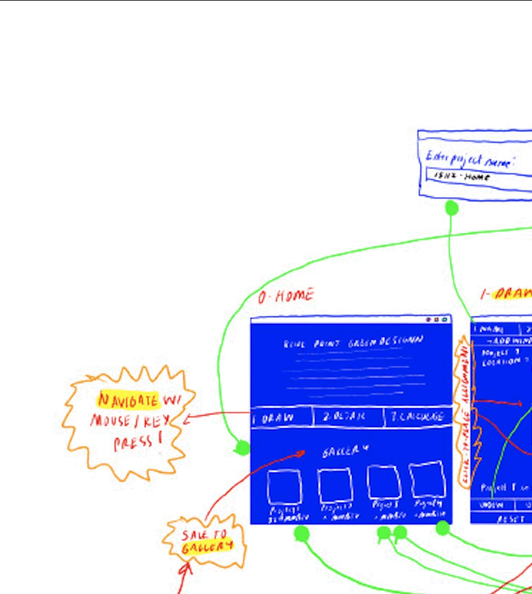

|
Meltem Sahin Ozkoc I'm currently a Master of Science (M.Sc.) candidate at the Carnegie Mellon University as a Fulbright scholar. I hold a Bachelor of Architecture (B.Arch.) degree from Middle East Technical University Department of Architecture as the salutatorian. say hello! msahinoz@andrew.cmu.edu |
{kind=link}
ProjectsWorks that span architecture, technology, and energy in the built environments. |

|
BI-T-OWER
Meltem Sahin Ozkoc B.Arch. in Architecture, Graduation Project project page BI-T-OWER reimagines Ankara's underutilized shopping malls as public-facing data farms—urban infrastructures that store, generate, and share data while serving as energy hubs. It proposes a hybrid typology that integrates public programs with data centers, making data production a civic act. |
|

|
BLUE-PRINT-GREEN-DESIGN
Meltem Sahin Ozkoc Essential MVC Programming, CMU video BLUEPRINT GREEN DESIGN is an interactive, free, accessible and low-size app for anyone who wants to create and visualize simple building plans in 2D, calculate and visualize their heat loss, and get energy analysis for each component to make informed decisions to improve energy efficiency. |

|
FOOD DIARIES
Meltem Sahin Ozkoc Personal Project, 2024 project page / instagram A visual documentation of culinary discoveries across cities and cultures. From local hawker centers to hidden gems, this project captures the stories behind every meal and the communities that create them. |